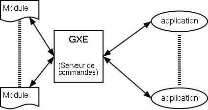
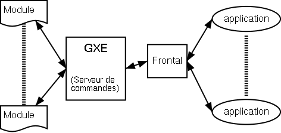

GXE est un interpréteur de commandes écrites en XML, basé sur le modèle client/serveur.
GXE est un Logiciel Libre distribué sous licence GPL.
L'architecture générale de GXE est la suivante:
GXE lit et interprète tout document écrit avec le méta-langage XML, et exécute les fonctions correspondants aux tags présents dans le document lu.
Afin de différencier un document XML classique d'une requête GXE, GXE définit un méta-langage, FxML (Flexible Markup Language).
Les fonctions FxML sont stockées dans des libraries dynamiques (libxx.so).
Le chargement des libraries se fait une première fois au lancement de gxe, et en cours de fonctionnement par l'intermédiaire d'un envoi de signal.
Les fonctions FxML sont écrites en langage C dans la version actuelle, et s'intègre à gxe par le biais d'une API fournie.
Les principales caractéristiques de GXE sont:
Un document FxML est structurée de la façon suivante:
|
<?xml version="1.0"?> <FxML [version="1.0"]> <NomCommande> <Nomparamètre1>valeur du paramètre 1</NomParamètre1> ...autres paramètres éventuels... </NomCommande> ...autres commandes éventuelles... </FxML> |
<FxML ...> est la balise racine, présente dans toute requête FxML.
L'attribut optionnel version contiendra la version du langage utilisée par l'application cliente.
Un document FxML peut comporter un nombre arbitraire de commandes.
La fin d'un document FxML est signifiée au serveur par l'envoi de 2 retours chariot successifs.
GXE permet 2 modes de fonctionnement:


GXE est composé des éléments suivants:
Le comportement général de GXE peut se résumer comme suit:
Développer un module gxe consiste à écrire une librairie partagée.
L'écriture en elle-même peut se faire à votre convenance, en evitant autant que possible les variables publiques (globales), à cause de la réentrance du code induite par le caractère multi-thread de gxe.
Le header s_global.h contient la définition des structures de données maintenues par gxe.
Ce fichier est à inclure dans chaque source de module.
Le format général d'une commande est le suivant:
cmd: pointe sur une structure FxCommand (voir le détail dans le fichier s_global.h)
La commande doit renvoyer 0 si succès, toute autre valeur sinon.
l'API met à la disposition du développeur quelques fonctions de base, permettant de s'interfacer avec GXE.
Le fichier s_api.c contient le détail des fonctions implémentées.
Quand le parser xml de gxe récupère un tag correspondant à un nom de commande, il recherche celle-ci dans sa table des commandes.
Si il ne la trouve pas, il recherche une commande de ce nom dans sa table des modules.
Si il la trouve, il ajoute une entrée dans la table des commandes, afin d'optimiser la prochaine recherche.
En cas, d'echec, une erreur est renvoyée.
Le projet gxe est organisé de la façon suivante: